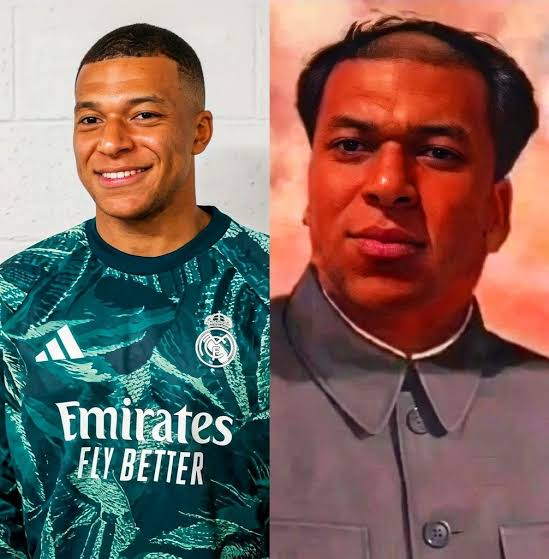
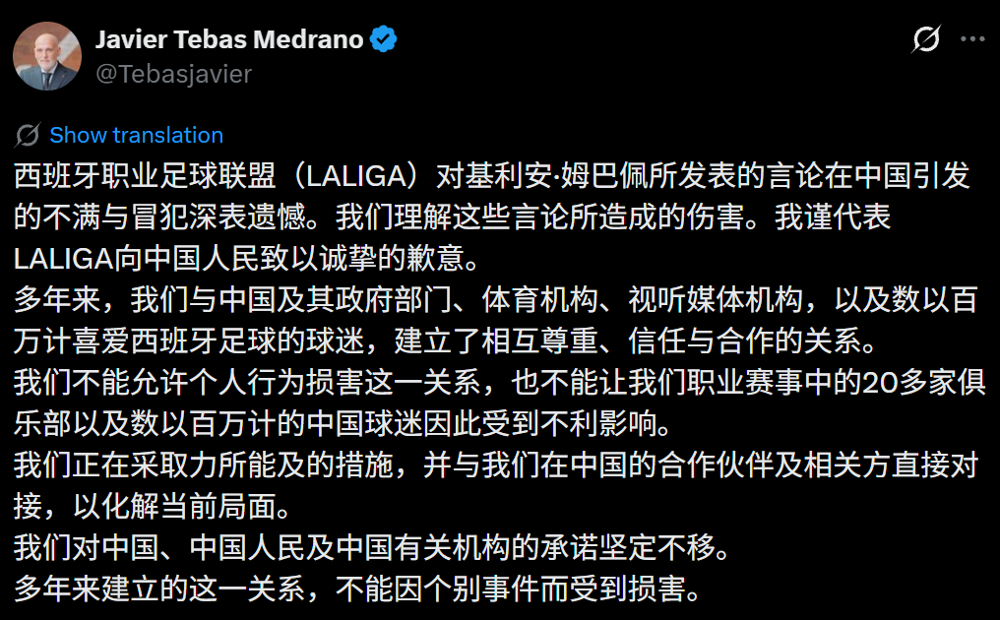
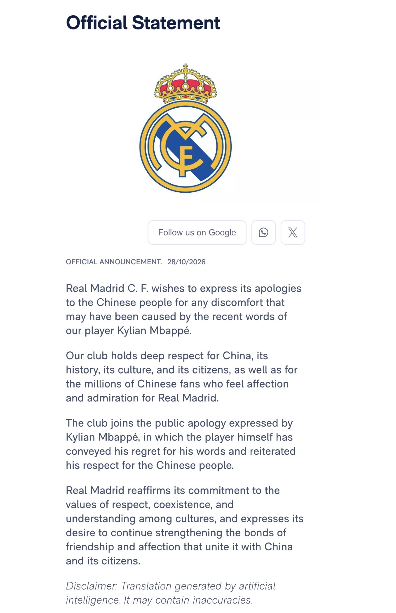

时事评论 · No. 05
独裁者的戏服
黑格尔在某个地方说过，一切伟大的世界历史事变和人物，可以说都出现两次。他忘记补充一点：第一次是作为悲剧出现，第二次是作为笑剧出现。 马克思《路易·波拿巴的雾月十八日》（1852）
「面子」，是我们在谈话里常常听到的，因为好像一听就懂，所以细想的人大约不很多。但近来从外国人的嘴里，有时也听到这两个音，他们似乎在研究。他们以为这一件事情，很不容易懂，然而是中国精神的纲领，只要抓住这个，就像二十四年前的拔住了辫子一样，全身都跟着走动了。……中国人要「面子」，是好的，可惜的是这「面子」是「圆机活法」，善于变化，于是就和「不要脸」混起来了。[31] 鲁迅《说「面子」》（1934）

姆巴佩，中国，独裁者？
十月二十七日，一家注册于巴黎第九区、注册资本三千欧元的简式股份公司发出了一封信，署名是这家公司唯一值得一提的资产：基利安·姆巴佩。信以法语、中文、英语三种文字写成，收信人是「中国人民及其历史」。[1] 然而被这封信当作收信人的那群人，多数并不知道写信者究竟说了什么，国内媒体在谴责时并未复述原话，相关内容在国内平台上亦不易寻得。[2] 一场围绕一句话而起的风波，其中一方自始至终没有听见那句话。
事情的来龙去脉可以压缩为一段。四月间，姆巴佩在同胞楚阿梅尼主持的节目《The Bridge》中被问及最喜欢哪一张关于自己的梗图，他答说笑得最厉害的是把他的脸合成到「某个人，我想是个中国独裁者」身上的那一张，并称自己与友人打游戏时常常用它。[3] 他没有点名，节目随即切到那张图：他的面孔，毛泽东的标准像。这张图属于一个更大的系列，自 2024 年起，球迷便把他的脸合成到各种军政人物身上，所取的是他「独裁者」的外号，指其对俱乐部、对媒体、对批评者的强势态度，系列中另有斯大林与金正恩。[4] 视频在网上安静地放了半年，十月下旬被配上中英译文在中文社交平台重新翻出，而将其推上热度的，是足球媒体懂球帝。[5] 十月二十六日晚，中央广播电视总台停播西甲赛事及含有姆巴佩的广告，并以西甲、姆巴佩、皇马三方道歉为进一步谈判的前提。[6] 二十七日，东鹏饮料宣布终止与他的全部合作，蒙牛跟进；西甲联盟发表声明，主席特巴斯以中文发推道歉；前述三语道歉信发出；总台回应称，道歉将以其今后的行为来评判；外交部亦有表态。[7] 二十八日，皇马发表官方声明。[8] 总台所开的三个前提，在四十八小时之内全部兑现。与此同时，美国众议院中国问题特设委员会发帖称他不应为称毛泽东为独裁者而道歉，法国的社交媒体上亦有人指责他退缩。[9]
于是出现了两个阵营，各自站在「独裁者」一词的一侧：一方认为这个词不可用于毛泽东，故而他必须道歉；另一方认为这个词可以用于毛泽东，故而他无须道歉。双方所争的，是同一个谓词能否适用于同一个对象。而没有人看主词。姆巴佩的问题并不在于他把「独裁者」用在了谁的身上，他甚至不知道那是谁；问题在于他把自己放进了那个范畴，并且说喜欢。关于「那人是谁」，他确有认识错误；关于「那人属于什么类型」，他却没有，「独裁者」三个字是他自己说出口的。他清楚地知道自己被画成了什么，而正是这一点令他觉得好笑。
这件戏服有两处毛病，彼此独立。
其一，它不合身。即便将政治与「独裁者」一词的语义争议悉数搁置，一名足球运动员也无从成为独裁者，其理由简单到近乎笨拙：足球之中并无此一位置。场上十一人与场下的替补，加上分工明确的十余人教练组，自主教练、助理教练、门将教练以至体能、分析与医疗，一场比赛的胜负由数十人的协作所决定，其中没有任何一个环节容许一人独断；队长并非指挥官，头牌亦非君主。所谓「独裁者姆巴佩」，不过是将一种团队运动中的个人风格，映射到了一个以独占权力为定义的政治范畴之上，而这一映射在足球这一侧便已失当。换言之，姆巴佩所认领的那个标签，在误描述任何他人之前，首先误描述了他自己。
其二，它不该穿。独裁者这一范畴，无论其所指是毛泽东，还是任何一位中东的军政强人，之所以不能成为玩笑的材料，并不在于某个政权是否容许对其缔造者的调侃，而在于这个范畴的定义本身便以他人的死亡为前提：一个人物被归入此类，正是因为其权力曾以众多的性命为代价，而玩笑的轻盈与这一代价的重量之间，并不存在任何可以通约的尺度。梗图出自他人之手，这一点无须为姆巴佩分辩；然而当一位公众人物在镜头前宣称这是令他笑得最厉害的一张，并且坦言它早已成为他与友人游戏时惯用的面具，事情的性质便已不再是「被人画成了什么」，而是「自己认下了什么」。他没有把自己与那个标签分开。这一判断的成立，既不以毛泽东是否独裁者的历史裁定为前提，亦不以中国人是否因此受到伤害的情感事实为前提；它所牵涉的，仅仅是姆巴佩面对一种幽默时所持的态度，以及这种态度在不经意间所泄露的、对于人命之分量的一种迟钝。
由此可见，两边都打错了靶。惩罚者所惩罚的，是「伤害民族感情」；辩护者所辩护的，是「不了解中国历史」；而他真正应当负责的，是把一件带血的戏服当作好玩的东西穿上了身。本文无意裁断毛泽东是否独裁者，这一判断对于后文的论证不起任何作用。它所要追问的是三件事：这次失败究竟是何种性质的失败；失败的成本按道理应当归于谁；以及成本实际上归于了谁，这种归法又为何什么也改变不了。
必也正名乎
要说清这次失败的性质，需要一个对照组，而同一支球队里恰好有一个：维尼修斯。
维尼修斯在西甲赛场上长期遭受看台的辱骂与对手的粗暴对待。在美国与巴西的默认分类里，这是种族歧视；而瓦伦西亚等对手俱乐部的辩护则是，他们所针对的并非他的肤色，而是他的做法。[10] 他在客场进球后跳桑巴舞，在西班牙的语境里被视为挑衅，2022 年一位电视评论员要他「别再耍猴」；而在巴西，桑巴乃是喜悦与身份的表达，巴西球员集体回应「跳吧，维尼」，巴西足协则将针对他的攻击视为针对巴西的攻击。[11] 这一组事实里，实际上包含着两种不同的失败。
第一种是同一行为，不同范畴。桑巴舞是一个确定的物理事件，但它落入「庆祝」还是「挑衅」，取决于观察者所在的分类系统；看台上的骂声同样是确定的物理事件，但它落入「种族歧视」还是「球场常见的辱骂」，取决于观察者的默认归类。瓦伦西亚的辩护策略本身便是一次重新分类的尝试，即通过声称动机来改变行为所属的范畴，而动机不可观察，于是分歧从来不在事实，而在范畴。这与本系列 No. 04 所讨论的「家暴」是同一种结构：后腰上的一脚是事实，「这构成家暴」则是一个需要框架去裁切的判断。[12]
第二种是同一词项，不同意义，这正是姆巴佩的情形。「dictator」在法语与英语的日常语境里是一个描述性的标签，带着戏谑，可以随口加在任何控制欲强的人身上；一旦进入中文的官方语境，它便成为一项带有敌意的政治指控。姆巴佩那句话在前一个语义系统里生成，在后一个语义系统里被解释，其间没有任何转换层。他所说的与被听见的，并非同一句话。
信息科学把两个系统能否正确交换并理解彼此数据的能力称为互操作性，[13] 而这个领域有一条基本经验：互操作性从来不靠双方的自觉达成。两个数据库各用各的词表，不会因为善意便自动对齐，它需要一张映射表，或者一个双方共同承认的参考本体，并且需要有人专门负责维护。在文化的层面上，这个角色本应由中介机构来承担，俱乐部、联盟、经纪公司、公关团队，其存在的理由之一便是替一个跨语境运行的人做语义转换。西甲把产品卖到全球，特巴斯的推文里从政府部门到视听媒体机构的合作对象应有尽有，却没有任何一层机构负责此事。姆巴佩并非一个人在节目上说错了话，他是一个没有转换层的系统在跨语境运行时的必然输出。
但这个框架有一个口子必须预先堵住。互操作性失败极易滑向「一切皆是文化误解」，而那恰恰是下一节所要拒绝的那种辩护的另一种说法。堵法是本体论里的常识：领域本体可以不同，上层本体是共享的。「独裁者」是一个领域层的词项，各语境的映射确有差异；「对大量死亡负有责任者不是玩笑材料」则是上层范畴，无须映射，任何语境皆认。姆巴佩的失败有一部分是映射失败，他不知道这个词在中文语境中的重量，这一部分可以原谅；另一部分却不是，他知道这个范畴是什么，仍然觉得好笑，这一部分不能原谅。维尼修斯的例子同样如此，桑巴舞是映射问题，看台上的骂声不是。互操作性框架的价值，正在于它能将这两部分切开，而不是把它们混成一句「文化差异」。
回到 §1 那件不合身的戏服，梗图本身亦是一次映射失败：它把团队运动中的个人风格映射到独占权力的政治范畴，在足球这一侧便已出错。于是姆巴佩的处境是三重的：他穿上了一件不属于他的衣服，这件衣服在另一个语境里有他所不知的重量，而这件衣服无论在哪个语境里都不该穿。前两重是互操作性问题，可以用转换层解决；第三重不是，它不需要转换，只需要对人命的分量有一点基本的感觉。
收钱时是品牌，追责时是球员
为姆巴佩辩护的声音中最常见的一种，大致是这样说的：他不过是一名足球运动员，不了解中国历史，只是跟着网上的梗图开了一个玩笑，不能指望他给出一个符合中国立场的回答，故而他没有责任。这个论证在刑法里有一个名字，叫期待可能性：在当时的处境下，能否期待行为人做出合法的行为，若不能，则免除对他的谴责。[14] 它在刑法中是一个严肃的概念，有逾一个世纪的学说史。问题在于，它在这里连刑法的门槛都未曾跨过，遑论搬入商业与公关的领域。
先把它拆开。辩护者实际上混用了两个东西：其一是认识错误，他不知道毛泽东是谁，不了解那段历史；其二才是期待可能性，即便他知道，也不能要求一名球员懂政治。二者在责任论里属于不同的层次，前者是认知问题，后者是意志自由问题。[15]
认识错误这一支，在刑法内部便已站不住。刑法区分事实认识错误与法律认识错误：把人误认为野猪而开枪，是事实认识错误，它直接否定故意，是一种强有力的辩护；知道自己在做什么、只是不知道这样做是被禁止的，是法律认识错误，而各法系的出发点一概是不知法不免责。[16] 之所以如此，一方面在于，倘若不知法可以免责，则人人皆有动机保持无知；另一方面在于，对于杀人、盗窃这类自然犯，没有人能够可信地主张「我不知道这是不对的」，法律的禁止与道德的禁止在那里是重合的，真正会发生违法性认识问题的，只是那些因法律规定才成为犯罪的技术性行为。[17] 以此衡量姆巴佩：他对「那人是谁」确有认识错误，但对「那人属于什么类型」没有，「独裁者」是他自己说的；而「不拿对大量死亡负责者开玩笑」属于自然犯那一类的规范，并非只有专家才知晓的技术性禁令。于是这个辩护落在了整个责任论中最弱的位置上，即对自然犯主张不知法；刑法对此的回答一向是，不知道也须负责，因为这种事本来便不该需要有人来告诉你。
期待可能性这一支，问题更为根本：它是一个过错责任的概念，而代言关系从来不按过错运行。刑法之所以为责任设置如此之高的门槛，是因为刑罚乃国家最重的回应、最后的手段，「不应受谴责」因此必须被认真对待。然而赞助商解约并非刑罚，它是风险分配。一份代言合同的实质，是运动员将自己的公共形象出租给品牌，合同中道德条款的功能，便是把「公开言论所引发的风险」整体划归运动员一方，不问过错。[18] 这在结构上更接近危险责任而非过错责任：驾车者对其车辆造成的损害负责，并非因为他开得不好，而是因为他是那个将风险带入公共空间的人。把一个责任阶层的免责事由，搬入一个根本不以责任为基础的领域，是一种范畴错误。
第二个问题是期待的标准。刑法所问的是「处在他位置上的一般人能做什么」，商业领域所问的则是「他所接受的那个位置要求他做什么」。姆巴佩不只是球员：他有公关团队，有自己的公司，那封道歉信正是以公司的名义、印着公司的信笺发出的；他从中国品牌收取的代言费，所购买的恰恰是「能在公开场合说话而不出事」这项能力。一个人不能在收钱时是全球品牌，在被追责时退回去做一个「只是踢球的」。这与职业注意义务是同一道理，医生在手术台上不能说自己只是一个普通人。[19] 而且期待的对象也并非姆巴佩其人，而是他背后的那套机构：一个有团队的人在节目上说话，是制度性行为而非即兴发言，制度未曾替他过滤，是制度的失职，而非他个人的无辜。
这一点与上一节直接相连。互操作性失败的责任归谁？信息系统里的答案十分清楚：谁要跨系统，谁负责映射，数据的输出方承担模式转换的成本，没有人会要求接收方替发送方翻译。移到此处，主动把自己放进另一个语境的，是收取中国品牌代言费的球员与把转播权卖到中国的联盟，而非中国的观众。期待可能性所问的是「能否期待他知道」，正确的问题却是「他所接受的那个位置是否包含知道的义务」，而这一义务，他已经通过收费的方式接受了。
第三个问题在于，政治与公关的领域里，后果与应得之间本来便没有关系。惩罚他的人并未在问「他该不该受谴责」，他们所问的是「继续与他绑定会发出什么信号」。期待可能性回答的，是一个无人提出的问题。
那么这个辩护有无一点对的地方？有，但范围极窄。它可以用来反对把姆巴佩本人当作毛泽东的辩护者或反华分子来加以道德定罪，他显然两者皆非。但辩护者把「他不值得被恨」偷换成了「他不该承担后果」，而这两个命题之间并无推论关系：一个人完全可以既不值得被恨，又必须为自己说的话付账。
于是 §1 所点出的那个错位，在此可以说得更完整。他真正应负责的事，是把独裁者当作好玩的戏服；他被惩罚的事，是伤害民族感情；他被辩护的事，是不了解中国历史。三件事两两不同，惩罚打错了靶，辩护亦打错了靶，而那个正中靶心的批评，既无须讨论毛泽东是否独裁者，亦无须讨论中国人是否受到了伤害，它只需要一个人对自己穿上的衣服看上一眼。
便宜的威胁
不给他走正门，就是他没有面子；他既然没有了面子，自然就是中国有了面子，也就是占了上风了。 鲁迅《说「面子」》
成本按道理应归于谁，上一节已经说完；这一节说成本实际上归于了谁，以及为什么。
博弈论对威胁有一条近乎朴素的判断：一个威胁能否取信于对方，并不取决于它听上去有多严厉，而取决于执行它对威胁方而言有多昂贵，昂贵的威胁无人相信，因为人人都知道它不会被真的付诸实施，唯有便宜的威胁方才可信，因为做了也不心疼。[20] 以此衡量，中央广播电视总台停播西甲乃是一个极其便宜的威胁，而其便宜，来自两个彼此无关却恰好叠加的来源：其一是国有体制对成本的内部化，其二，更具讽刺意味的，则是盗播。
先说前者。停播的是总台，兜底的是中国移动，做决定的是另一套人。自 2026/27 赛季起，西甲在中国大陆的独家新媒体版权归于咪咕，咪咕是中国移动的子公司，总台仅保留每轮两场的联合转播。[21] 版权费早已签定，停播所损失的不过是广告与订阅，而这些损失并不落在任何一个做决定的人头上：下命令者与付钱者并非同一人，付钱者亦非以自己的钱支付。一个威胁的执行成本，经三层组织的层层稀释，到决策者那里已趋近于零。
再说后者。中国的西甲球迷并不会因总台停播而看不到西甲，网上渠道不胜枚举。这意味着停播对球迷几乎不构成实际的剥夺，于是在国内不会引起任何反弹；倘若球迷真的只能通过总台观赛，停播便会制造出一群不满的人，政府在动用这一手段之前便须有所掂量，正因为人人都能另寻他处，停播才可以随手使用。盗播生态降低了政府动用这一手段的国内政治成本。国有体制替它兜了一半，盗版替它兜了另一半。
再看另一侧。西甲的即期损失其实也不大，合同在那里，本赛季的款项照付，真正的不对称在于时间结构：中国一方损失的是一个有上限的、已然发生的沉没成本，西甲损失的则是一个没有上限的期权。特巴斯经营了十年的中国市场，中国品牌的赞助，下一个版权周期的议价能力，二十余家俱乐部各自的中国业务，皆系于此。他的推文说得十分明白，「我们不能允许个人行为损害这一关系，也不能让我们职业赛事中的 20 多家俱乐部以及数以百万计的中国球迷因此受到不利影响」。[22] 他在一天之内道歉，所道的并非本赛季的歉，而是未来三个赛季的歉。同一条推文里还有一个细节：他列举关系对象的顺序，是「中国及其政府部门、体育机构、视听媒体机构，以及数以百万计喜爱西班牙足球的球迷」，政府部门排在第一，球迷排在最末。这并非措辞的疏忽，而是一份债权人的名单。

这种结构并非初次出现。2019 年，休斯敦火箭队总经理莫雷发出一条支持香港示威者的推文，总台停播美国职业篮球联赛（NBA）中国赛，联赛的中国收入数年之后方才恢复；[23] 2020 年中英关系紧张期间，总台停播英超。[24] 每一次的链条如出一辙：个人言论，民族感情，赞助商切割，国家广播机构停播，联盟层面道歉。这一次唯一的新意在于触发点，它不是一个政治立场的表达，而是对一张梗图的随口反应，当事人甚至不确定那人是谁。惩罚机制对「有意的政治表态」与「无知的随口一提」做出了完全相同的反应，这足以说明，这套机制所看的是信号，而非意图。
厄齐尔的案子把这一点推到了极端。2019 年 12 月，他就新疆问题公开发声，总台随即撤播阿森纳对曼城的比赛，阿森纳则在微博上声明，那是「厄齐尔的个人观点」，俱乐部「一贯坚持不涉足政治」。[25] 他此后虽仍出场十余次，疫情停摆之后便再未获得机会，2021 年初解约离队；今年五月他在一次公开演讲中说，发帖之前他便知道会惹麻烦，但不在乎，而阿森纳在那之后「把门关上了」。[26] 阿森纳否认这是商业上的决定，这一否认本身不必深究，值得并置的是两个人的结局：厄齐尔有意为之，对后果有充分的认识，拒绝道歉，以职业生涯的末段为代价；姆巴佩无意为之，对所言之物几乎一无所知，一天之内道歉，所付出的大约不过是几份代言与一段时日的观察期。惩罚机制对两者的即时反应完全相同，而对两者的最终处置截然相反，差别不在于谁的过错更重，而在于谁交出了那份道歉。它所奖励的从来不是无辜，而是服从；它所惩罚的也从来不是冒犯，而是不肯收回。阿森纳 2019 年的那句「个人观点」，与西甲 2026 年的「个人行为，不代表 LALIGA」、皇马的「我们的球员近来的言论」，用的是同一张模板，七年间一字未改，这说明机构早已学会了自己的台词，所剩下的，只是等每一个球员学会他的。
另有一个细节值得记下。一段四月的视频到十月才成为事件，中间隔着半年，这半年里它对任何人都不构成冒犯，使它成为冒犯的，是一家足球媒体在十月下旬有选择地将它翻出。[5] 足球世界的阵营划分之鲜明、对立之激烈，在所有体育项目中数一数二，姆巴佩在球迷中拥有大量的反对者，一家足球媒体在这个时点、以这种标题把一段旧视频推至公众面前，其动机未必与毛泽东有关。这并不改变姆巴佩应负的责任，但它提示，国家机器所接过的，是一个从球迷阵营递过来的球。
而国家机器在接球之后，有一个它自己无法解决的尴尬：它必须把一切包装成市场行为。停播是「广播机构的商业决定」，解约是「品牌对伤害民族感情零容忍」，之所以必须如此包装，是因为真正的理由说不出口，政府不可能站出来论证「毛泽东不是独裁者」，那等于把问题引向它最不愿讨论的方向。于是只能借用「伤害民族感情」这种有意含糊的说法，把一个关于政权合法性叙事的问题，伪装成一个关于公众情绪的问题。这也解释了姆巴佩的道歉为何只能道给「中国人民」：他所回应的是外壳，因为内核根本未曾被说出。
此处可以把维尼修斯再请回来一次，因为他展示了同一结构里惩罚方向反转之后的情形。维尼修斯一方对西甲没有任何经济杠杆，巴西并非西甲的大市场，他们所拥有的是制度化的规范支撑：国际足联的反歧视框架，西班牙的法院，2024 年三名瓦伦西亚球迷因球场种族辱骂被定罪，为西班牙首例。[27] 姆巴佩一方所面对的惩罚者则恰恰相反，只有杠杆，没有规范。两个案子的结果因而截然不同：前者推动了制度性的改变，西甲的反歧视机制与司法先例；后者只产生了三份道歉与一次停播。便宜的威胁只能买到姿态，买不到任何制度性的东西。谁有能力惩罚，所决定的不只是惩罚会不会发生，还决定了惩罚能产出什么：受害者一方的惩罚产出规范，加害者继承者一方的惩罚只产出服从。
最后须问，中国一方究竟有无成本。有，但它是弥散的。每动用一次这一手段，外国联赛与品牌对中国市场的风险溢价便上调一分，长期观之，中国市场作为杠杆的价值正在被自己消耗；然而这一成本不落在任何一个具体的决策者头上，也不出现在任何一个季度里，于是从未有人为它负责。这与「伤害民族感情」的框架实为一事：收益集中、可见、即时，成本分散、不可见、延后。鲁迅所记的总理衙门故事里，洋人拿走了利益，中国留下了面子；一百年后结构未变，只是这一次，面子的价格由中国移动的股东来付。
挂在墙上的画
古之君子，恶其名而不饮，今之君子，改其名而饮之。 长谷川如是闲语，鲁迅《说「面子」》引
三份道歉并排放在一起，呈现出三种不同的语气。姆巴佩写的是「我现在明白，它伤害了中国和世界各地华人社区的许多人」，是承认；特巴斯写的是「深表遗憾」「谨代表 LALIGA 向中国人民致以诚挚的歉意」，是代为承担；皇马写的是「for any discomfort that may have been caused」，虚拟语气，有条件的道歉，页面底部还附有一行「翻译由人工智能生成，可能有误」。[28] 三者的强度恰与各自利益暴露的程度成正比：暴露最深的联盟道得最重，球员次之，俱乐部最轻，连中文版本都不愿负责。

而三份文本有一个共同之处：没有一份说出被冒犯的是谁。姆巴佩的信通篇不见「毛泽东」，不见「独裁者」，只有「一张以我为主角的图片」与「我的言论」；特巴斯列举了政府部门、体育机构、视听媒体机构，没有列举冒犯的对象；皇马说的是「我们的球员近来的言论」。道歉承认了伤害，却自始至终不承认具体做了什么，这是「改其名而饮之」。按 §2 的说法，三份文本都只在上层本体工作，刻意避开领域层的词项；它们能够被中国接受，恰恰是因为它们什么也没有说。

奥斯汀把「我道歉」列为显性施行式话语的标准例句：说出它的同时便做成了一件事，无所谓真假，只有恰当与否，而恰当的条件在于它是否在适当的情境、由适当的人、依适当的程序说出。[29] 本系列 No. 03 曾用这一区分来诊断一张由语言模型开出的预约单；[30] 这一次它适用于一封由公关公司开出的道歉信。问题在于，这句施行式话语的恰当条件并不由说话者掌握，而由惩罚方单方面设定，并被无限期地悬置：「听其言，观其行」的意思，是道歉的效力将由对方在未来某个未指明的时刻、依据某个未指明的标准来裁定。它不是一次被接受的道歉，而是一张被收下的欠条。能指完整，所指由对方随时宣告落空。
于是全文的三重错位可以收束为一句：他真正应负责的事，不是他被惩罚的事，也不是他被辩护的事。惩罚方要的是面子，辩护方要的是无辜，而那件戏服，从头到尾没有人提起。
被人画成独裁者是一回事，把这张画挂在自己的墙上是另一回事。
面子各自保全，戏服仍挂在原处。
注释
- [1] 道歉信以 Interconnected Ventures 名义于 2026 年 10 月 27 日发出，信笺抬头载明：Siège social : 17 rue Henry Monnier, 75009 Paris；SAS au capital de 3 000 €；RCS Paris 830 095 584。SAS 即简式股份公司（société par actions simplifiée），RCS 即商事与公司登记（registre du commerce et des sociétés）。正文为法语、中文、英语三个版本，中文居中。本文据原件截图（见 §5 图）。
- [2] NBC News 2026 年 10 月 28 日报道指出，由于内容审查，国内许多人并不清楚姆巴佩究竟说了什么；TIME 同日报道亦注意到，多家中国媒体在谴责其言论时未复述原话。见 NBC News、TIME。
- [3] 访谈见法国节目《The Bridge》，由楚阿梅尼（Aurélien Tchouaméni）主持，录制于 2026 年 4 月。原话据路透社转述为「some guy—I think he's a Chinese dictator」；姆巴佩在同一访谈中称自己与友人打游戏时「经常用」这张梗图。见 Sports Illustrated、KTLA。
- [4] 据 Know Your Meme 的词条，「独裁者姆巴佩」（Dictator Mbappé）的首张改图出现于 2024 年，其由来在于他对待批评者的方式被认为是在「让对方闭嘴」；系列中另有斯大林、金正恩等人物。转引自 KTLA 上引报道。
- [5] 视频于 2026 年 10 月下旬配以中英译文在中文社交平台重新流传，其中一条被 Sports Illustrated 引用的推文标题为「姆巴佩称毛泽东为『中国独裁者』 原视频+中英翻译」。将其推上热度的为足球媒体懂球帝，其首发时间、标题与传播量，本文未独立核验，待补。
- [6] 据澎湃新闻援引接近总台的消息，中央广播电视总台自 2026 年 10 月 26 日（周一）晚起暂停西甲赛事及涉及姆巴佩的比赛转播，撤下其广告，并以西甲、姆巴佩、皇马三方道歉为进一步磋商的前提。转引自 World Soccer Talk、Sportskeeda。
- [7] 东鹏饮料（「补水啦」母公司）于 10 月 27 日宣布终止与姆巴佩的全部合作，理由为对伤害民族感情的行为零容忍，蒙牛跟进，见 Bloomberg；西甲联盟声明与特巴斯推文，见 Yahoo Sports；总台 10 月 27 日评论称道歉将由其行动来评判，并敦促姆巴佩、皇马与西甲吸取教训，见 CNBC；外交部表态见 Sportskeeda 上引报道。
- [8] 皇家马德里官方网站 2026 年 10 月 28 日声明（Official Statement），见 §5 图。页面底部注明「Translation generated by artificial intelligence. It may contain inaccuracies.」
- [9] 美国众议院中国问题特设委员会（House Select Committee on China）10 月 27 日发帖称姆巴佩不应为称毛泽东为独裁者而道歉；法国社交媒体对其退缩的批评，均见 TIME 上引报道。
- [10] 维尼修斯（Vinícius Júnior）在西甲赛场遭受种族辱骂的事件以 2023 年 5 月梅斯塔利亚球场一役最为著名；瓦伦西亚俱乐部及部分球迷对所喊内容的辩解，与巴西、美国舆论对事件的归类之间存在系统性分歧。具体声明原文与日期，待核。
- [11] 2022 年 9 月，一位西班牙电视评论员在节目中针对维尼修斯的进球舞蹈使用了「耍猴」的说法，巴西球员随即以「跳吧，维尼」（Baila Vini）集体回应；巴西足协亦曾多次就针对维尼修斯的辱骂向国际足联与西班牙方面施压。评论员姓名、节目与巴西足协声明的出处，待核。
- [12] 参见本站时事评论 No. 04《谁先拿起石头》§2「三个赵晓红：法律的、电影的、舆论的」。
- [13] 互操作性（interoperability）的通行定义见 ISO/IEC 2382 信息技术词汇及 IEEE 610.12：两个或多个系统交换信息并使用所交换信息的能力。关于上层本体（upper ontology）与领域本体（domain ontology）的分层，见 Robert Arp, Barry Smith & Andrew D. Spear, Building Ontologies with Basic Formal Ontology (MIT Press, 2015)。基本形式本体论（Basic Formal Ontology，BFO）的设计理念正是：领域层的词表可以各异，而共享一个上层本体是跨领域互操作的前提。本文取其譬，不作形式化的展开。
- [14] 期待可能性（Zumutbarkeit）的学说一般追溯至德国帝国法院 1897 年的「癖马案」（Leinenfängerfall, RGSt 30, 25），经 Reinhard Frank, Über den Aufbau des Schuldbegriffs（1907）与 Berthold Freudenthal, Schuld und Vorwurf im geltenden Strafrecht（1922）发展为规范责任论的核心要素。中文论述可参见张明楷《刑法学》责任论相关章节。
- [15] 在德日规范责任论的通说中，违法性认识（或其可能性）与期待可能性同属责任阶层，前者关乎行为人对规范的认知，后者关乎在具体处境下能否要求其依规范行事，二者相互独立。参见 Claus Roxin, Strafrecht Allgemeiner Teil, Bd. I，及张明楷上引书。
- [16] 德国刑法典（Strafgesetzbuch，StGB）第十七条规定，不可避免的禁止错误阻却责任，可避免者仅得减轻；美国普通法原则上不承认法律认识错误的辩护，例外主要见 Lambert v. California, 355 U.S. 225 (1957)（纯粹不作为与无从知晓的登记义务）与 Cheek v. United States, 498 U.S. 192 (1991)（税法中「故意」的特殊解释）；中国刑法对违法性认识无明文规定，学说上多作为责任要素处理，实务中仅在个别法定犯案件中发生作用。
- [17] 自然犯（delitto naturale）与法定犯之分，出自 Raffaele Garofalo, Criminologia（1885）：前者违反人类共同的基本道德情感（怜悯与正直），后者仅因法律规定而成为犯罪。此处取其通行用法。
- [18] 代言合同中的道德条款（morals clause）通常约定，运动员的公开言行若损害品牌声誉，品牌方有权终止合同，而无须证明运动员存在过错或损害的实际发生。相关体育法文献，待补。
- [19] 职业注意义务（professional standard of care）：侵权法通说认为，从事专业活动者所应尽的注意，以该专业合格从业者的标准衡量，而非一般人的标准。此处取其通行用法。
- [20] 关于威胁的可信度取决于威胁方自身承担的成本，见 Thomas C. Schelling, The Strategy of Conflict (Harvard University Press, 1960)，尤其第二章关于承诺与威胁的讨论；中译《冲突的战略》，赵华等译，华夏出版社，2006。
- [21] 据 2026 年 10 月的公开报道，咪咕自 2026/27 至 2029/30 赛季为西甲联赛中国大陆地区独家新媒体合作伙伴，全赛季 380 场直播，每轮 8 场独家、2 场与中央广播电视总台联合转播；咪咕为中国移动旗下公司。见新浪新闻及同期报道。需要说明的是：截至本文写作，公开报道中停播的主体仅见总台，咪咕是否同步停播其独家场次，未见明确报道；网传的年版权费数字因无可靠来源，本文不予采用。
- [22] 特巴斯（Javier Tebas）2026 年 10 月 27 日于 X 平台以中文发布的声明，见 §4 图；引文依推文原文。
- [23] 2019 年 10 月，休斯敦火箭队总经理莫雷（Daryl Morey）发布支持香港示威者的推文，中央广播电视总台随即宣布暂停转播美国职业篮球联赛（NBA）中国赛，并审查与 NBA 的一切合作，见 South China Morning Post。联赛中国收入损失的估算数字各家不一，本文不引具体数额。
- [24] 2020 年 7 月，中英关系因香港与华为问题趋于紧张，中央广播电视总台将英超剩余轮次移出节目表，见 Gulf News（转引 Bloomberg）。
- [25] 2019 年 12 月 13 日，厄齐尔（Mesut Özil）在社交媒体就新疆维吾尔人处境发声；14 日阿森纳在微博声明「所发布内容均为厄齐尔个人观点」，俱乐部「一贯坚持不涉足政治的原则」；15 日中央广播电视总台将阿森纳对曼城的比赛移出转播计划。见 Al Jazeera、Malay Mail（转引路透社）。
- [26] 厄齐尔于 2019 年 12 月发帖后仍为阿森纳出场十三次，2020 年 3 月疫情停摆后再未上场，2021 年 1 月与俱乐部协议解约、转投费内巴切。2026 年 5 月，他在一次峰会演讲中称，发帖前便知会惹麻烦但并不在乎，阿森纳此后「把门关上了」；阿森纳时任首席执行官 Venkatesham 否认这是商业决定。见 Uyghur Times、VOI。峰会名称与演讲原文，待核。
- [27] 2024 年 6 月，三名瓦伦西亚球迷因 2023 年 5 月在梅斯塔利亚球场对维尼修斯的种族辱骂被西班牙法院判处监禁，为西班牙首例因球场种族辱骂定罪的案件。判决文号与报道出处，待核。
- [28] 三份道歉的原文分别见 §5 图（姆巴佩）、§4 图（特巴斯）与 §5 图（皇马）。皇马声明的英文原句为「Real Madrid C. F. wishes to express its apologies to the Chinese people for any discomfort that may have been caused by the recent words of our player Kylian Mbappé.」
- [29] J. L. Austin, How to Do Things with Words (Oxford: Clarendon Press, 1962)；中译《如何以言行事》，杨玉成、赵京超译，商务印书馆，2013。「I apologize」是 Austin 用以说明显性施行式（explicit performative）的标准例句之一；恰当条件（felicity conditions）的概念亦出自该书。
- [30] 参见本站时事评论 No. 03《机心的造魅》§3「从陈述到施行：幻觉的语用越界」。
- [31] 鲁迅《说「面子」》，1934 年 10 月作，收入《且介亭杂文》。题记为节引，省略号处略去关于总理衙门的故事及「面子」诸种分别的讨论；「二十四年前的拔住了辫子」指 1911 年辛亥革命后的剪辫。§4 节首所引总理衙门一段，与 §5 节首所引长谷川如是闲语，均出自同一篇。文本依公开通行版本，具体字句以《鲁迅全集》为准。
本文为思想档案中的一则时事评论，写于 2026 年 10 月。文中涉及事件经过者，依据公开报道，已尽力标明其来源与限度；涉及版权、收入等数字者，凡未能核实的一概不予采用。本文不裁断毛泽东是否独裁者，亦不判断三份道歉是否出于真诚；它所解剖的，是一次跨语境失败的责任结构与后果结构。